연구 과제
거대 군집 다계층(VLEO-LEO-UAV) 통합 영상 기반 초저지연 인텔리전스 서비스 생태계 연구 및 산학연계 핵심 인력양성
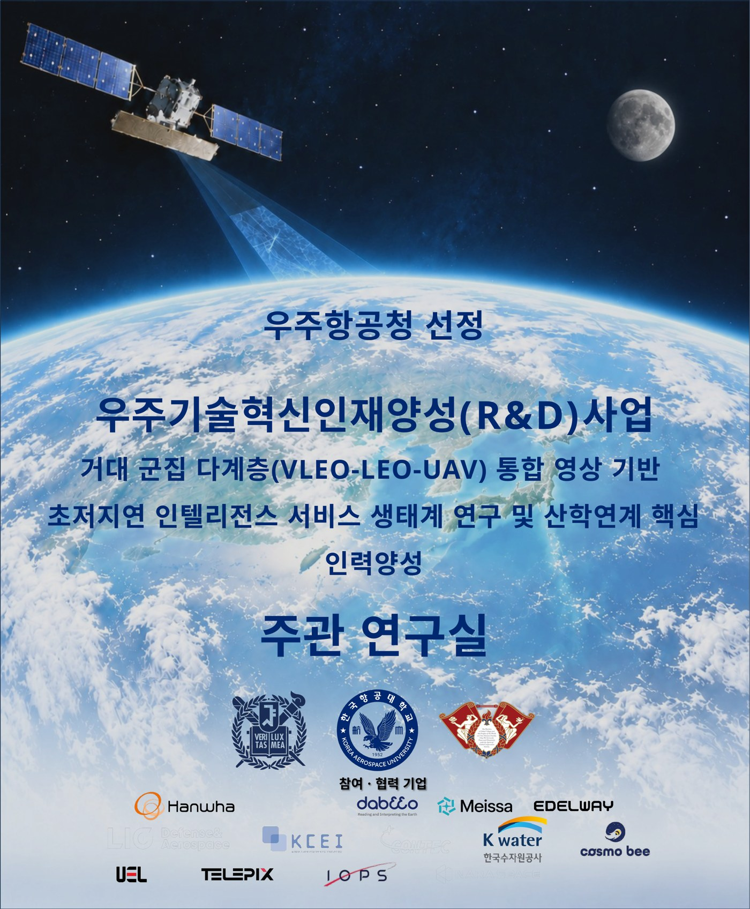
참여·협력 기업
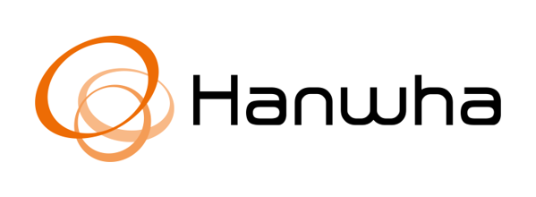
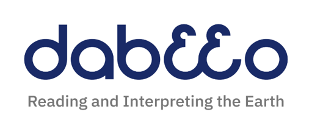
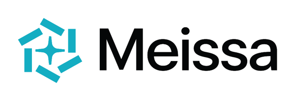
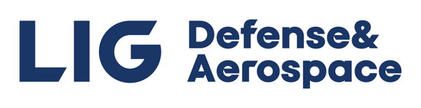
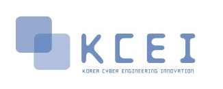
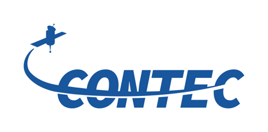
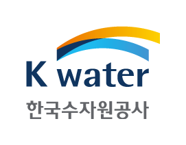
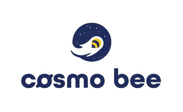
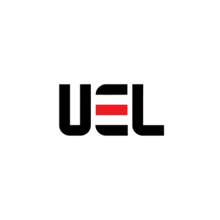
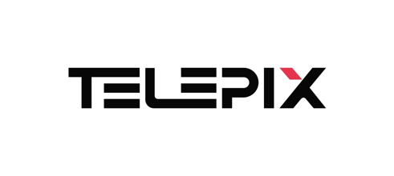
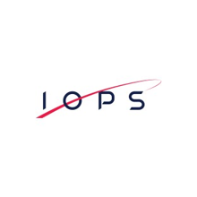
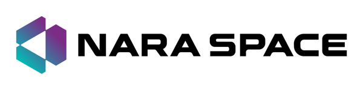
개요
우주항공청이 선정한 우주기술혁신인재양성(R&D) 사업과제로, 초저궤도(VLEO)·저궤도(LEO) 위성과 무인기(UAV)로 이루어진 거대 군집 다계층의 통합 영상을 기반으로 초저지연 인텔리전스 서비스 생태계를 연구하고, 산학연계 핵심 인력을 양성하는 과제이다. 우주기술혁신인재양성(R&D)사업은 우주항공청이 추진하는 국가연구개발사업이며, 2026년도 신규과제는 산학협력 연구현장 연계 고급 인력양성, AI 기반 우주항공 연구개발 프로젝트 고도화, 우주항공 글로벌 인력양성 및 활용의 세 트랙으로 공고된 사업이다.
참여 기관
- 대학: 서울대학교, 한국항공대학교, 경희대학교
- 참여·협력 기업: Hanwha(한화), dabeeo(다비오), Meissa(메이사), EDELWAY, LIG Defense & Aerospace, KCEI, CONTEC(컨텍), K-water(한국수자원공사), cosmo bee, UEL, TELEPIX(텔레픽스), IOPS, NARA SPACE(나라스페이스)